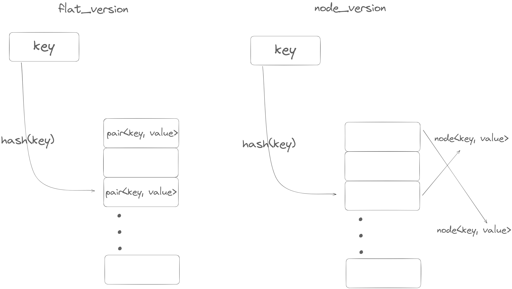

parallel-hashmap
本文最后更新于：1 分钟前
phmap_map
众所周知，C++标准库的
unordered_map向来不是一个好的选择。开源市场上有非常多的高性能哈希表可供选择，phmap继承自absl-hashmap，有着非常好的插入、查找性能。在著名的Comprehensive C++ Hashmap Benchmarks 2022榜单中名列前茅。事实上，我比对了phmap::flat_hash_map与榜单中综合性能第一的ankerl::unordered_dense::map，我的benchmark中只有遍历哈希表时，flat_hash_map的性能低于unordered_dense::map，其余无论是插入还是随即查找，大部分情况下flat_hash_map的性能都更优。本文简单介绍了flat_hash_map相关情况，以及一些使用上的建议与坑点。
flat_hash_map 和 node_hash_map区别
phmap中有提供了两类哈希表，其内部布局示意图如下：
由上图（忽略了bucket的细节）可以看出，flat_hash_map的最大的优点在于
- node之间的内存是连续的(虽然可能中间存在空node)，遍历的时候对cache更加友好
- 并且相比于
node_hash_map版少一次寻址过程（std::unordered_map的设计与node_hash_map）相同。
而 flat_*系列的缺点就是在 rehash的时候:
- 会引发原来的value失效（这里的失效指的是原来的那个对象所对应的内存失效，而不是value所包含的内容失效，例如，value是一个指针，那它的值——所指向的对象，不会受到影响）。举个例子：
1 | |
原因就是 flat_hash_map的内存布局导致的。而 node_hash_map或者 std::unordered_map就保证不会出现这种情况，因为当他们rehash的时候，只需要将bucket内的指针重新分配，指针的值还是指向原来的 node<key, value>.
- 由上述原因引发的性能问题： 当
node<pair, value>很大的时候，flat_hash_map每次 rehash 需要重新构造的开销大，而node_hash_map只需要重新构造相同数量的指针。并且遍历时也因为两个node之间相隔较大使得 cache locality 下降。
使用建议(单线程)
绝大多数情况下直接用 flat_hash_map:
int -> intint -> stringstring->intstring(sso) -> string(sso)string(none-sso)->string(none-sso)
少数情况用 node_hash_map:
-
key -> Large Data这种情况强烈建议用
flat_hash_map<key, ptr<Large Data>>代替
有意思的一点是为什么经过实测 string(none-sso) -> string(none-sso)这种情况下仍然是 flat_hash_map更快一点，难道string(none-sso)不是Large Data吗？
事实上，string 虽然可能很大，但是其 raw data存在另外分配的一个空间（超过短字符串优化限定大小时），所以当rehash的时候，新生成的string只需要move由来的string就可以了。下图展示了其内存布局：
另外，如果提前知道需要插入的pair的数量（或者大致数量），特别是只作为一个look-up table使用时（一次性插入，只查询或更改已存在的key），那么使用提前 reverse是个明智的选择，这能有效提高哈希表的性能。一般需要reserve成需要插入数量的 两倍 而不是一倍 ，因为与vector这样的容器不同的是，为了防止过于频繁的碰撞，会在每个bucket还没满的时候就进行扩容
parallel_flat_hash_map
phmap库除了包含继承自 abseil的 {flat/node}_hash_{set/map}外，还有支持并发操作下的 parallel_*系列。以 parallel_flat_hash_map为例，其实现如下图：
一个 parallel_flat_hash_map有（默认 2^4 = ）16 个 子flat_hash_map组成。这样做可以
- 更加细粒度的使用锁，从而减少锁之间的等待
- 一次rehash一个
submap，减小修改操作的开销
基本的使用方法也很简单，需要在模板参数上指定一个锁，一般使用（std::mutex或者std::shared_mutex，官方文档说shared_mutex性能更优，我个人的测试下mutex性能更优，但是相差不大）。其余的使用上与非parallel版本基本一致，以下是简单的例子：
1 | |
经过测试，在插入和修改操作混合的情况下（随机插入1000000个数，非重复数字在600000以上），parallel_mp耗时 80ms左右，而手动给 flat_hash_map加锁耗时 250ms左右。
另外，既然 parallel_*是由多个子map形成，那个在特定条件下，我们甚至可以无需锁就能保证线程安全。
具体操作如下：
- 已知所有的需要插入的key
- 每个线程需要有一个线程idx标识，线程数量少于
子map数量 - 对于特定的key，得到hashval后将这个key的所有相关操作绑定到某个特定线程上进行。
这样就可以实现无锁并发
我们可以通过下面这个例子具体观察：
1 | |
上面的代码基本展示了无锁使用 parallel_*的过程，我们会将hashval按照 submap 进行区分，如果 idx = mp.subidx(hashval) 表示这个key对应的 submap。在上述代码中，一个线程对应两个 submap可以进行插入。
这种用法的局限性也很明显：线程数量需要是 submap 数量的倍数；一个线程一定要对应一个下标传入需要处理的函数；总之不是很好用…
（在多线程下只用map更加有效的方法或许是对于不同的key直接用不同的线程进行处理，且提前reserve防止rehash的时候迭代器失效）
benchmarks
以下操作的个数都为 1'000'000次，最后一列string->string 插入次数为 100'000次
vector作为baseline插入pair<K,V>进行比较
| benchmarks(insert) | insert ints | insert ints(reserve first) | insert string(sso)->ptr | insert int->LargeData | insert string(8)->string(4096) |
|---|---|---|---|---|---|
| std::vector | 17ms | 7ms | 33ms | 102ms | 153ms |
| std::unordered_map | 170ms | 72ms | 343ms | 249ms | 213ms |
| flat_hash_map | 47ms | 34ms | 90ms | 462ms | 182ms |
| node_hash_map | 152ms | 68ms | 182ms | 236ms | 183ms |
| benchmarks(read) | iterate ints | find int | iterate string | find string |
|---|---|---|---|---|
| std::vector | 0ms | * | 3ms | * |
| std::unordered_map | 20ms | 52ms | 55ms | 152ms |
| flat_hash_map | 3ms | 23ms | 8ms | 71ms |
| node_hash_map | 14ms | 38ms | 14ms | 108ms |
About parallel_flat_hash_map
| inserting 1000000 ints | 1-thread | 8-threads | 8-threads |
|---|---|---|---|
| flat_hash_map | 31ms | 23ms(no lock) | 214ms(mutex manually) |
| parallel_flat_hash_map | 35ms | * | 70ms(mutex/shared_mutex) |
一个小问题
在测试的时候发现，无论是 flat_hash_map还是 node_hash_map都没法插入 None-moveable的数据，但是 std::unordered_map可以。
1 | |
如果说 flat_hash_map在 rehash的时候需要move所以禁止使用NoneMoveable还可以理解，但是 node_hash_map的行为应该和 unordered_map是一致，还是有这个问题。
本博客所有文章除特别声明外，均采用 CC BY-SA 4.0 协议 ，转载请注明出处！